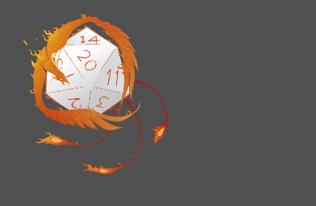
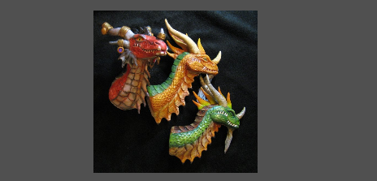
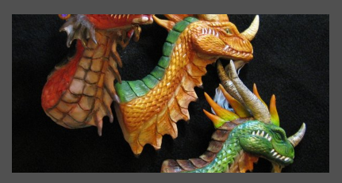
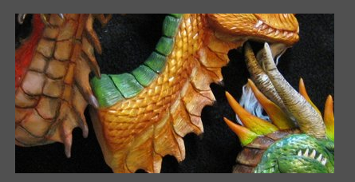
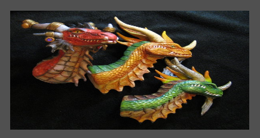

Tag image
Tag IMAGE
A tag/componente image representa uma imagem na interface visual.
Herança
O image possui todas as características de um controle qualquer. Veja Características de todas as tags visuais.
Características
Além das características herdadas, o image também possui as seguintes características:
Propriedades e Atributos
| Propriedade | Tipo | Valor Padrão | Descrição |
|---|---|---|---|
| animate | Boolean | false | Define se deve executar a animação de imagens que são animadas (exemplo: GIF, GIFV) quando suportadas. |
| url, src ou imageURL | String | \<string vazio> | Define a URL/caminho de onde se encontra a imagem! Este valor: Pode ser um endereço de internet (exemplo: “http://xxxx.com.br/a.png”) Pode ser o caminho de um arquivo contido no pacote do plugin. Pode ser um arquivo que se encontra no HD Virtual do plugin instalado. |
| style ou showStyle | Enumerado: “proportional” “autoFit” “originalSize” “stretch” | “proportional” | Define como a imagem será apresentada na interface: “proportional”: A imagem será redimensionada, proporcionalmente, para o tamanho do controle, não necessariamente ocupando todo o espaço disponível. “autoFit”: A imagem será exibida de forma que SEMPRE ocupe TODO o espaço do controle da forma mais adequada, isto é, aumentando/diminuindo a imagem, centralizando-a e cortando excessos. “originalSize”: A imagem será apresentada no tamanho original, sem redimensionamento. “stretch”: A imagem será redimensionada de forma que ocupe todo o espaço disponível no controle, podendo achatar ou alongar a imagem. |
| center | Boolean | true | Quando true, a imagem será exibida de forma centralizada no controle. Esta propriedade é válida apenas quando a propriedade “showStyle” for “proportional” ou “originalSize” |
| optimizeQuality ou ** optimize** | Boolean | false | Quando true, o SDK salvará uma cópia da imagem já redimensionada de acordo com a propriedade “style”. Utilize este atributo apenas em controles image que não sofrem constante mudança de tamanho. |
| showProgress | Boolean | true | Quando true, o controle exibe uma barra de carregamento para informar que a imagem está sendo baixada. Quando false, a imagem definida pela propriedade “URLWhileLoading” é exibida enquanto o download é feito. |
| URLWhileLoading | String | \<string vazio> | Define a URL/caminho da imagem que é exibida APENAS enquanto a imagem principal (definida na propriedade “url”) é carregada. Este valor: Pode ser um endereço de internet (exemplo: “http://xxxx.com.br/a.png”) Pode ser o caminho de um arquivo contido no projeto do plugin Pode ser um arquivo que se encontra no HD Virtual do plugin instalado. |
| field | String | \<string vazio> | Caminho de um campo no NodeDatabase. Quando associado, a imagem passa a apresentar a imagem de URL contida no campo do NodeDatabase informado. Veja também: Lua Form e NodeDatabase NodeDatabase |
| editable | Boolean | false | Quando True, a tag permite o usuário alterar a URL da imagem. Se o atributo "field" estiver preenchido, a URL escolhida pelo usuário é salva no campo do NodeDatabase. |
| naturalAnimated | Boolean | false | (Somente Leitura) Quando a imagem tiver sido carregada, contém a informação se ela suporta animação. |
| naturalWidth | Double | 0 | (Somente Leitura) Quando a imagem tiver sido carregada, contém a largura original da imagem em pixels. |
| naturalHeight | Double | 0 | (Somente Leitura) Quando a imagem tiver sido carregada, contém a altura original da imagem em pixels. |
{kind=link}
Eventos
| Nome do evento | Descrição |
|---|---|
| onLoad | Este evento é invocado quando a imagem tiver sido carregada. |
| onPictureLoadedChange | Este evento é invocado quando a imagem que será exibida mudou. Este evento é chamado quando a imagem é carregada 100% ou quando uma imagem é descarregada. |
Veja Tratando eventos do Lua Form
Exemplos
Exemplo 1 - Imagem dentro do projeto de plug-in
Neste exemplo, existe uma pasta chamada "imagens" dentro da pasta projeto do plug-in, e dentro desta pasta existe a imagem "fenix.png".
| \<?xml version="1.0" encoding="UTF-8"?> \<form name="frmFichaTeste"> \<image left="20" top="20" width="200" height="200" src="/imagens/fenix.png"/> \</form> |
|---|

Exemplo 2 - Imagem baixada por URL e diversos styles
| \<?xml version="1.0" encoding="UTF-8"?> \<form name="frmFichaTeste"> \<image left="20" top="20" width="400" height="200" style="autoFit" src="http://fc03.deviantart.net/fs70/i/2011/234/5/4/dragon_aspects_by_rattlesnakedefender-d47ii5y.jpg"/> \</form> |
|---|
|  style="proportional" |  style="autoFit" |
|---|---|
|  style="originalSize" |  style="stretch" |
Created with the Personal Edition of HelpNDoc: Free EPub and documentation generator